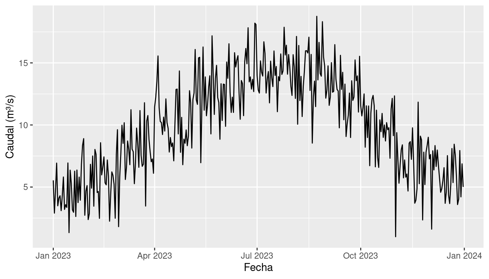

1 + 1[1] 2Un bloque de código (en inglés, code chunk) es una sección de tu documento .qmd que contiene código ejecutable. Cuando renderizas el documento, Quarto ejecuta el código y puede insertar los resultados (texto, tablas, gráficos) directamente en el documento final.
Los bloques de código se delimitan con tres acentos graves y llaves que indican el lenguaje:
```{r}
# Tu código R aquí
1 + 1
```Al renderizar, esto produce:
1 + 1[1] 2En RStudio puedes crear un bloque de código de tres formas:
Ctrl+Alt+I (Windows/Linux) o Cmd+Option+I (macOS).``` directamente.Las opciones de bloque controlan cómo se ejecuta y se muestra el código. Se escriben al inicio del bloque con el prefijo #|:
```{r}
#| echo: true
#| eval: true
#| warning: false
library(tidyverse)
```| Opción | Valores | Efecto |
|---|---|---|
echo |
true / false |
¿Mostrar el código fuente en el documento? |
eval |
true / false |
¿Ejecutar el código? |
output |
true / false |
¿Mostrar la salida del código? |
warning |
true / false |
¿Mostrar advertencias? |
message |
true / false |
¿Mostrar mensajes? |
fig-cap |
texto | Título de la figura generada |
fig-width |
número | Ancho de la figura (en pulgadas) |
fig-height |
número | Alto de la figura (en pulgadas) |
label |
texto | Etiqueta para referencias cruzadas |
echo: falseCuando quieres mostrar solo el resultado (como en un informe profesional):
Este resultado aparece sin mostrar el código que lo generó.eval: falseÚtil para mostrar una instrucción de instalación:
install.packages("nombrePaquete")Puedes insertar resultados de R directamente dentro del texto usando un acento grave (backtick `), luego {r}, luego tu expresión de R, y otro acento grave para cerrar. Esto es útil para reportar valores calculados.
Por ejemplo, si escribes en tu archivo .qmd:
```{r}
pendiente <- 5 # en grados
```
La pendiente del cauce es `{r} round(pendiente/45 * 100, 1)` %.El resultado será: La pendiente del cauce es 11.1 %.
Vamos a trabajar con un dataset de ejemplo que simula mediciones hidrológicas. Sigue los siguientes pasos para que puedas entender el proceso
Asegúrate de cumplir estos requisitos:
Crea un nuevo documento de Quarto con las siguientes condiciones:
Reemplaza el contenido del documento de Quarto, sin cambiar el encabezado por el siguiente contenido
```{r}
#| message: false
#| warning: false
library(tidyverse)
```
## Cargar y explorar datos
Cargando datos desde `datos/ejemplo-hidro.csv`
```{r}
#| message: false
datos <- read_csv("datos/ejemplo-hidro.csv")
head(datos)
```
Aquí tienes un resumen breve de los datos
```{r}
summary(datos)
```Presiona el botón de render y verás una página web con un análisis rápido de los datos con algo parecido a lo se ve a continuación:
library(tidyverse)datos <- read_csv("datos/ejemplo-hidro.csv")
head(datos)# A tibble: 6 × 5
fecha mes caudal_m3s temperatura_c precipitacion_mm
<date> <dbl> <dbl> <dbl> <dbl>
1 2023-01-01 1 5.54 23 3.1
2 2023-01-02 1 2.9 23.6 0
3 2023-01-03 1 4.73 23.4 0
4 2023-01-04 1 6.93 23.4 0
5 2023-01-05 1 3.49 25.7 0
6 2023-01-06 1 4.11 22.8 6.1summary(datos) fecha mes caudal_m3s temperatura_c
Min. :2023-01-01 Min. : 1.000 Min. : 1.000 Min. :20.50
1st Qu.:2023-04-02 1st Qu.: 4.000 1st Qu.: 6.820 1st Qu.:23.00
Median :2023-07-02 Median : 7.000 Median : 9.980 Median :24.10
Mean :2023-07-02 Mean : 6.526 Mean : 9.922 Mean :23.98
3rd Qu.:2023-10-01 3rd Qu.:10.000 3rd Qu.:13.090 3rd Qu.:25.00
Max. :2023-12-31 Max. :12.000 Max. :18.750 Max. :26.70
precipitacion_mm
Min. : 0.000
1st Qu.: 0.000
Median : 0.000
Mean : 3.411
3rd Qu.: 5.600
Max. :20.500 En Quarto también puedes generar gráficos mediante código, si es necesario. Para completar el ejermplo práctico anterior, puedes agregar un bloque de código adicional donde se cree un gráfico a partir de los datos (copia y pega el siguiente contenido al final del documento):
```{r}
#| label: fig-caudal-mensual
#| fig-cap: "Caudal medio mensual en la estación de ejemplo"
#| fig-width: 7
#| fig-height: 4
ggplot(datos, aes(x = fecha, y = caudal_m3s)) +
geom_line() +
labs(
x = "Fecha",
y = "Caudal (m³/s)"
)
```… luego presiona el botón de [Render] y mira el resultado.

Observa cómo el gráfico se genera automáticamente a partir de los datos. Si los datos cambian, el gráfico se actualiza al renderizar de nuevo.
Puedes establecer opciones predeterminadas para todos los bloques de código del documento en el encabezado YAML:
---
title: "Mi informe"
execute:
echo: true
warning: false
message: false
---Esto evita repetir las mismas opciones en cada bloque.
Crea un documento Quarto que:
datos/ejemplo-hidro.csv (o cualquier dataset en formato CSV que tengas disponible).ggplot2 que muestre la distribución o tendencia de una variable.echo: false (solo resultado) y otro con echo: true (código visible).